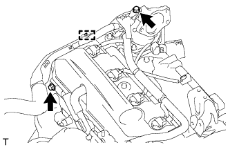
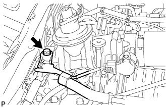
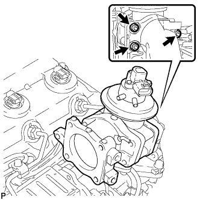
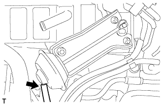

ОХЛАДИТЕЛЬ РОГ (для моделей без DPF) > СНЯТИЕ |
| 1. ОТСОЕДИНИТЕ ПРОВОД ОТ ОТРИЦАТЕЛЬНОГО ВЫВОДА АККУМУЛЯТОРНОЙ БАТАРЕИ |
| 2. СНИМИТЕ НИЖНЮЮ ОБЛИЦОВКУ ПЕРЕДНЕГО БАМПЕРА |
Освободите фиксатор, выверните 5 болтов и снимите нижнюю накладку переднего бампера.
| 3. СНИМИТЕ ЗАЩИТУ КАРТЕРА ДВИГАТЕЛЯ № 1 В СБОРЕ |
Выверните 4 болта и снимите защиту картера двигателя № 1.
| 4. СЛЕЙТЕ ОХЛАЖДАЮЩУЮ ЖИДКОСТЬ ДВИГАТЕЛЯ |
Ослабьте пробку сливного крана радиатора.
 |
Слейте охлаждающую жидкость, сняв пробку расширительного бачка, а затем с помощью ключа снимите вентиляционную пробку.
Ослабьте пробку сливного крана блока цилиндров.

| *1 | Бачок радиатора | *2 | Вентиляционная пробка |
| *3 | Пробка сливного крана радиатора | *4 | Пробка сливного крана блока цилиндров |
| 5. СНИМИТЕ ВЕНТИЛЯЦИОННУЮ РЕШЕТКУ В ВЕРХНЕЙ ЧАСТИ КОЖУХА В СБОРЕ |
Снимите вентиляционную решетку в верхней части кожуха (Нажмите здесь).
| 6. СНИМИТЕ КОРПУС ДРОССЕЛЬНОЙ ЗАСЛОНКИ ДИЗЕЛЬНОГО ДВИГАТЕЛЯ В СБОРЕ |
Снимите корпус дроссельной заслонки дизельного двигателя (Нажмите здесь).
| 7. ОТСОЕДИНИТЕ ПЕРЕПУСКНОЙ ШЛАНГ ОХЛАЖДАЮЩЕЙ ЖИДКОСТИ № 3 |
 |
Снимите зажим.
Отсоедините перепускной шланг охлаждающей жидкости № 3 от охладителя РОГ.
| 8. ОТСОЕДИНИТЕ ПЕРЕПУСКНОЙ ШЛАНГ ОХЛАЖДАЮЩЕЙ ЖИДКОСТИ № 4 |
Отсоедините перепускной шланг охлаждающей жидкости № 4 от охладителя РОГ.
| 9. СНИМИТЕ ТОПЛИВНУЮ ТРУБКУ ВЫСОКОГО ДАВЛЕНИЯ |
 |
Отверните 2 гайки и снимите зажим топливной трубки высокого давления № 3.
 |
Выверните 2 болта и снимите 2 зажима топливной трубки высокого давления № 2.
 |
С помощью разрезной головки на 17 мм ослабьте гайки штуцеров и снимите топливные трубки высокого давления № 1, № 2 и № 3.
| *a | Со стороны форсунки |
| *b | Со стороны топливной системы Common Rail |
| 10. СНИМИТЕ ОПОРУ ПАТРУБКА ПОДАЧИ ВОЗДУХА |
 |
Выверните 3 болта и снимите опору патрубка подачи воздуха.
| 11. ОТСОЕДИНИТЕ ЖГУТ ЭЛЕКТРОПРОВОДКИ ДВИГАТЕЛЯ (для моделей с левосторонним рулевым управлением) |
|  |
Выверните 2 болта.
Открепите зажим и отсоедините жгут электропроводки двигателя.
| 12. ОТСОЕДИНИТЕ ЖГУТ ЭЛЕКТРОПРОВОДКИ ДВИГАТЕЛЯ (для моделей с правосторонним рулевым управлением) |
|  |
Выверните болт и отсоедините жгут электропроводки двигателя.
| 13. СНИМИТЕ КРОНШТЕЙН КЛАПАНА РОГ |
Отверните 2 гайки и снимите кронштейн клапана РОГ.
| 14. СНИМИТЕ ЭЛЕКТРОННЫЙ КЛАПАН УПРАВЛЕНИЯ РАЗРЕЖЕНИЕМ В СБОРЕ |
 |
Отсоедините 2 разъема от электрического клапана управления РОГ и E-VRV.
 |
Освободите зажим жгута проводов.
 |
Отсоедините 5 вакуумных шлангов.
Выверните болт и снимите газовый фильтр вместе с кронштейном газового фильтра.
 |
Выверните 2 болта и снимите кронштейн E-VRV вместе с вакуумным демпфером РОГ.
| 15. СНИМИТЕ ПАТРУБОК ПОДАЧИ ВОЗДУХА № 2 |
|  |
Отверните 3 гайки и снимите патрубок подачи воздуха № 2 и прокладку.
| 16. СНИМИТЕ ПАТРУБОК ПОДАЧИ ВОЗДУХА |
 |
Выверните 3 болта и снимите патрубок подачи воздуха и 2 прокладки.
| 17. СНИМИТЕ ЭЛЕКТРИЧЕСКИЙ КЛАПАН УПРАВЛЕНИЯ РОГ В СБОРЕ С КЛАПАНОМ РОГ № 2 И ОХЛАДИТЕЛЕМ РОГ |
|  |
Отсоедините вакуумный шланг № 3 от клапана РОГ № 2.
 |
Выверните болт, отверните 2 гайки и снимите электрический клапан управления РОГ вместе с клапаном РОГ № 2 и охладителем РОГ.
Снимите прокладку с блока цилиндров.
| 18. СНИМИТЕ ЭЛЕКТРИЧЕСКИЙ КЛАПАН УПРАВЛЕНИЯ РОГ В СБОРЕ |
 |
Выверните 2 болта и снимите электрический клапан управления РОГ и прокладку.
| *A | Для моделей с охладителем РОГ |
| *B | Для моделей без охладителя РОГ |
| 19. СНИМИТЕ ПЕРЕХОДНИК КЛАПАНА РОГ |
 |
С помощью шестигранного ключа на 6 мм выверните 3 болта с шестигранными головками и снимите 3 плоских шайбы, переходник клапана РОГ и прокладку.
| 20. СНИМИТЕ КЛАПАН РОГ № 2 В СОБРЕ |
 |
С помощью шестигранного ключа на 5 мм выверните болт с шестигранной головкой и снимите клапан РОГ № 2 и прокладку.
| 21. СНИМИТЕ ОХЛАДИТЕЛЬ РОГ |